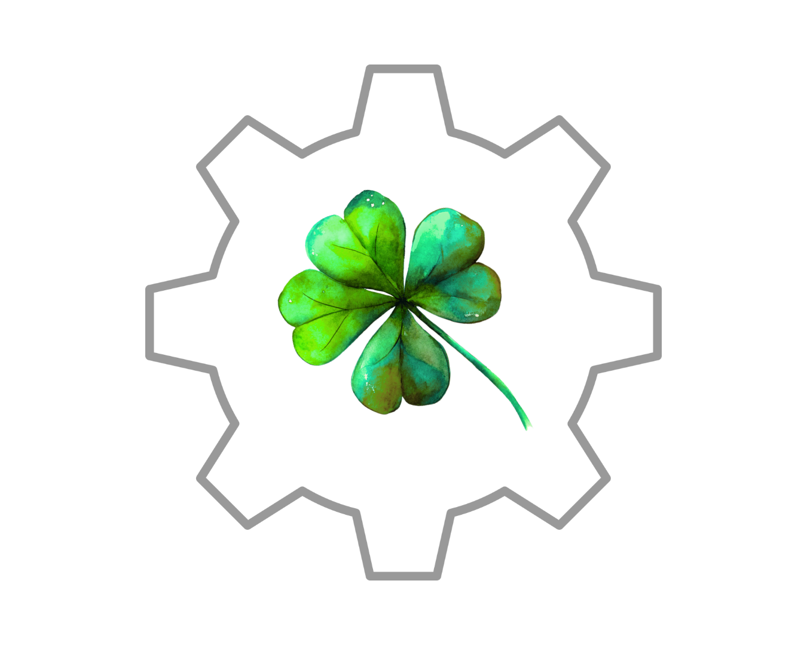
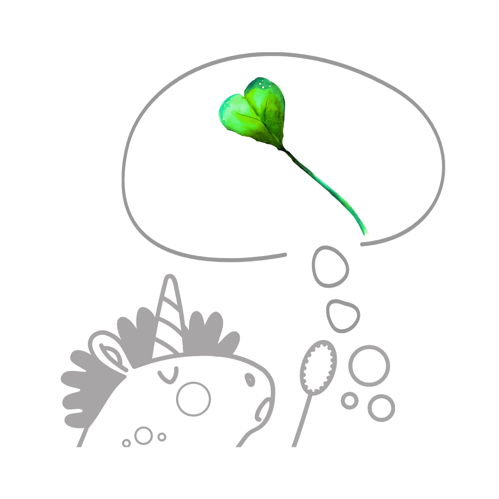
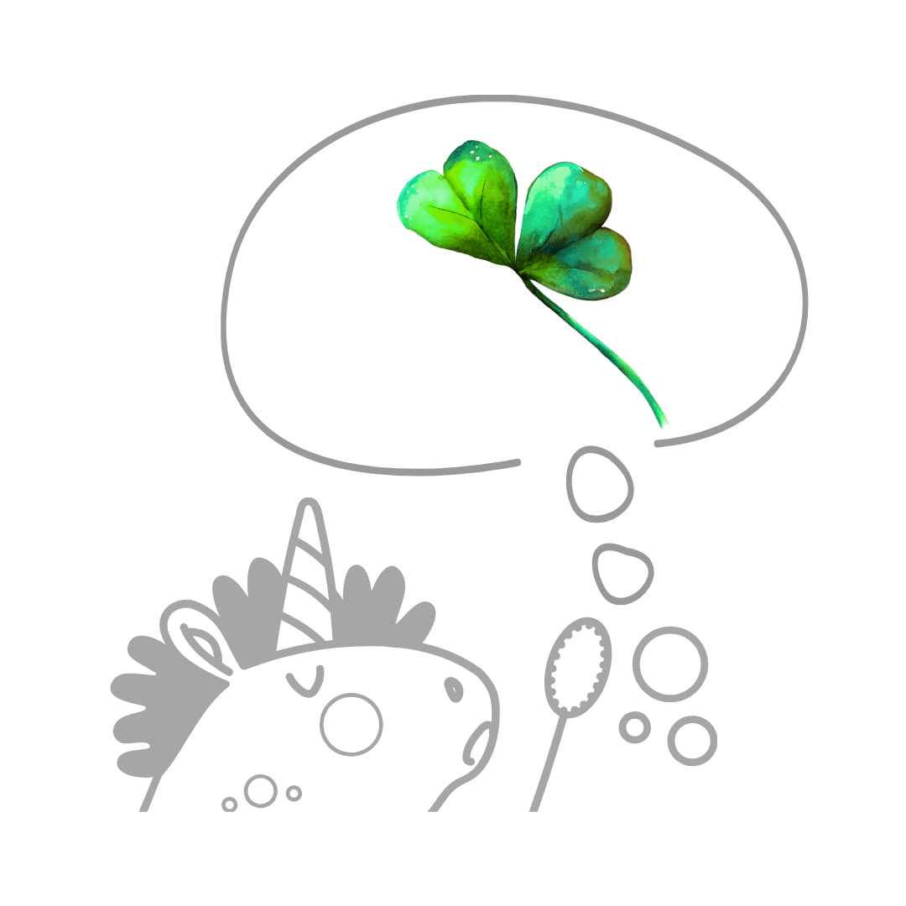
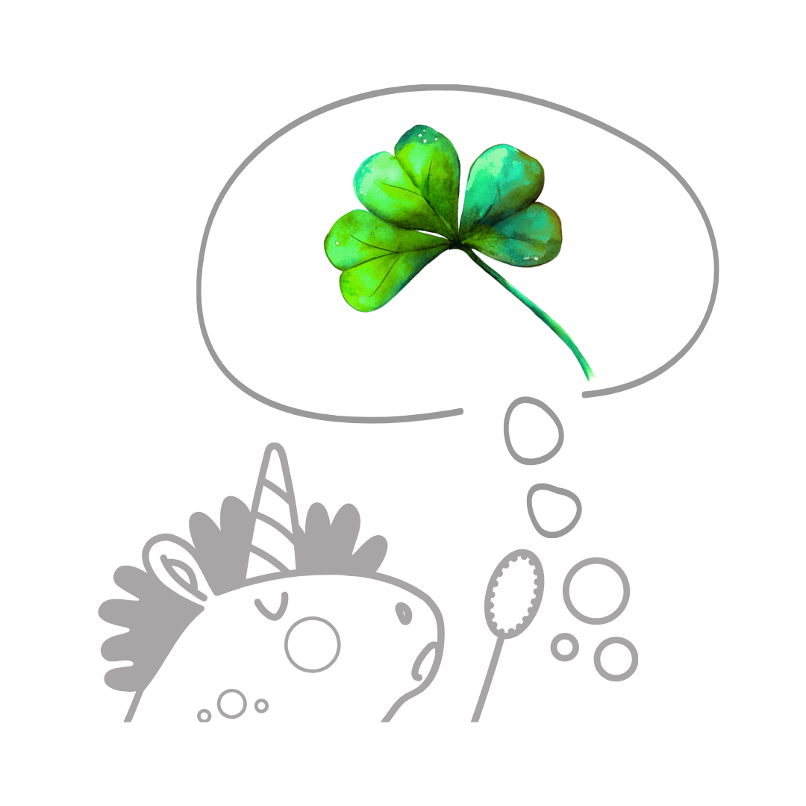
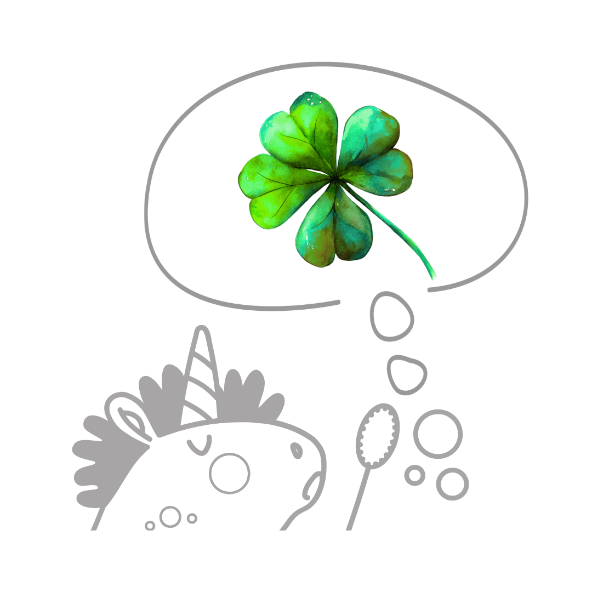
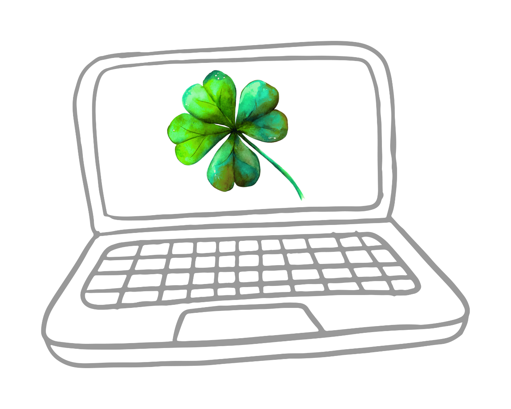
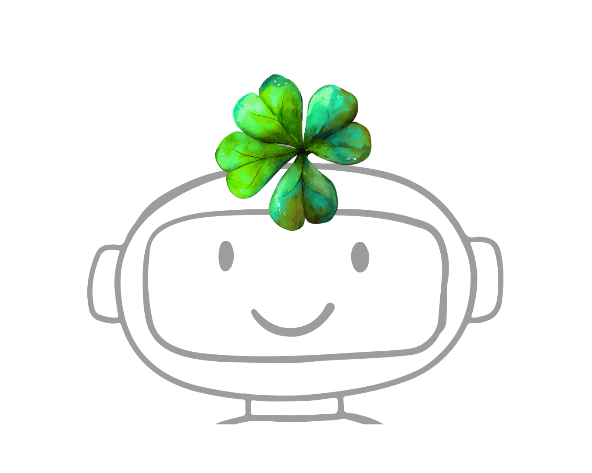

Technikálie Činnosti virtuální asistentky
- e-mailing
- prodejní nástroje
- propojení „všeho se vším"
S čím pracuju: SmartEmailing, Fapi, SimpleShop
Lenka Vopařilová | Technická online podpora v podnikání | Webdesign
Nebudu ti lhát - tento web je tu hlavně proto, aby nějaký byl.
Ale neboj, nejsi tu
zbytečně!
Delegování. To je věc!

...nemáš čas
na technikálie
...už máš pocit, že ti technická stránka tvého podnikání zabírá až moc času, který by se dal využít rozumněji

...nemáš nervy
na technikálie
...už nemáš nervy postopadesátýšestý zkoumat, jak se něco nastavuje (a pak to stejně nechce fungovat)

...potřebuješ
web
...potřebuješ takový nějaký normální web nebo něco přidat a doladit v tom, který už máš

...potřebuješ
od každého něco
...potřebuješ od každého něco – pořešit web a zároveň udělat landing page na magnet, napojit na něj e-mailing, udělat prodejku s prodejním formulářem a ještě k tomu členskou sekci, a tak dále
Dobře to znám
Moje služby

S čím pracuju: SmartEmailing, Fapi, SimpleShop

S čím pracuju: Divi, Elementor

S čím pracuju: Google Antigravity, Claude Code
Toolbox
(nebo jsem je alespoň už někdy viděla)
Ceník
Praktické info
(Zatím věz alespoň to, že...)
Hodinovku si měřím v nástroji Toggl a zapínám ho opravdu jen, když pracuju na konkrétním projektu (ne když hledám postup v návodech nebo když si vařím kafe).
Platbu za činnosti virtuální asistentky fakturuju zpravidla předem a odpracovaný čas si z předplacené částky odečítám (před vyčerpáním předplaceného času se snažím vždy včas upozornit). U webů si předem účtuju zálohu 5 000 Kč.
Konečnou cenu webu neodhadnu takhle předem – je to hodně individuální. Záleží na tom, jak rozvětvený web bude, v jakém nástroji jej budeš chtít vytvořit (Wordpress nebo AI), a také jak moc budeš chtít pomoci s podklady typu texty, fotky, barvy, fonty apod.
Všechno je ale hlavně na domluvě – když nevíš, neboj se mě zeptat/poptat – je totiž docela klidně možné, že něco, co ti připadá jako neřešitelný rébus na X hodin práce, pro mě bude otázka půl hodiny.
Nebo ti taky můžu říct, že „zrovna tohle nevím." I to se může stát. V tom případě se ale nebojím některé věci zjistit, nebo i doučit, když to bude dávat smysl, popřípadě tě dokážu odkázat na kompetentnější osoby či zdroje.
Začněme každopádně tím, že mi napíšeš, co přesně potřebuješ a na zbytku už se nějak domluvíme podle aktuálních možností nás obou!
Něco velmi málo o mně
Jsem Lenka, jsem z Liberce a objevením téhle práce jsem se, mimo jiné, pokoušela zachránit své mozkové buňky a sebehodnotu od mateřského zakrnění. A úplně mě to pohltilo!
Každopádně, jak je vidno, mám to hozený spíš do méně formálního stylu a celkově je pro mě nejen v pracovní rovině důležitý pocit pohody a vzájemné podpory spíš než tlak na výkon (pozor, nezaměňovat s leností či salámismem!). Hodím se tedy spíše ke spolupráci s drobnými podnikateli-nadšenci než do velkých firem.
Původně jsem kancelářská krysa (a prapůvodně jsem měla být sociolog a taky jsem chtěla zachránit planetu), ale tenhle svět online podnikání mi otevřel dosud netušené obzory. Za jejich rozšíření vděčím odbornicím na slovo vzatým – Lucce Doležalové a Magdě Bouškové, jejichž mentorský dohled mám v případě potřeby v zádech, takže se nemusíš bát, že by moje práce nebyla profesionální.